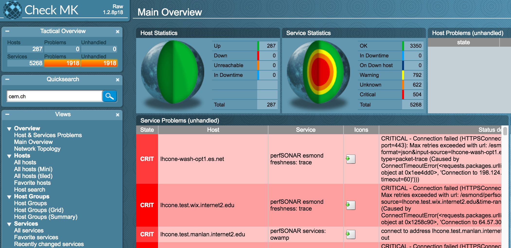
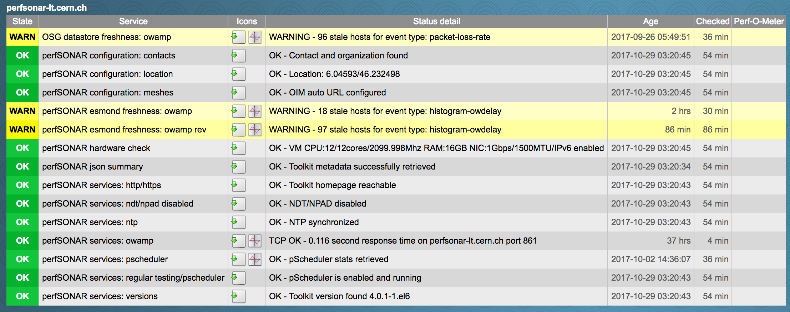

Infrastructure Monitoring¶
WLCG/OSG is operating a more than 200 perfSONAR agents world-wide. A typical perfSONAR deployment has many services that need to function correctly for the the system to work. As we scale-up to many perfSONAR deployments across many sites it can be difficult to verify everything is working correctly.
perfSONAR monitoring instance actively monitors the state of the infrastructure for both remote perfSONAR installation as well as central services. The instance is based on ETF, which is an open source measurement middleware for functional/availability testing of the resources. In order to access the page you'll need to have x509 grid certificate loaded in the browser.
A sample initial dashboard is shown below: 
You can use quicksearch in the left pane to search for hostnames, domains or tests. The tests performed can be divided into three catogeries:
1. Configuration tests (perfSONAR configuration:) tests if the contact, organisation and meshes were following our installation guide
2. Service tests (perfSONAR services:) check if different services are up and running correctly as well as if ports are reachable from OSG subnets
3. Hardware test (perfSONAR hardware) checks if the node conforms to the minimal hardware requirements
4. Freshness tests (perfSONAR freshness) is a high level test that checks what tests are available in the local measurement archive and compares this with the tests configured. There can be many different reasons why certain tests are stale, such as disfunctional remote perfSONAR nodes, network connectivity issues as well as local issues with measurement archive, therefore this test is informative and never reaches critical state. A special kind of freshness tests are OSG datastore freshness tests, which account for what fraction of tests results is stored centrally as compared to local measurement archive.
This is sample snapshost for perfsonar-lt.cern.ch: 